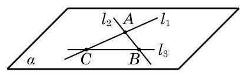
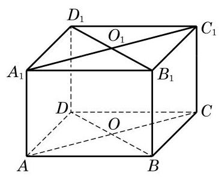
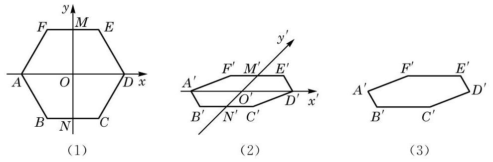
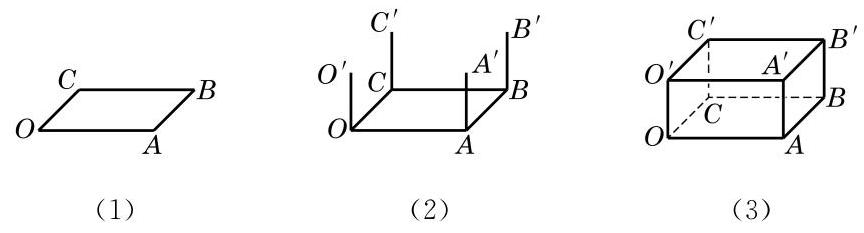

空间直线与平面

从平面几何到立体几何, 我们要注意借鉴平面几何中已有的一些概念、方法和结论, 更要特别注意立体几何和平面几何之间的区别. 以本章学习的空间直线与平面为例, 我们不仅要研究平面这类典型的空间图形, 而且要对“直线”有更为深刻的认识. 比如, 空间两条直线之间的位置关系，除了平行与相交，还有既不相交、也不平行的情况，从而出现了异面直线这种更为复杂的研究对象. 这些都与平面几何情况大不相同, 也使立体几何的内涵变得格外丰富多彩.
我们生活在一个三维世界中, 立体几何的学习有助于我们从几何的角度更好地理解现实的世界，并且锻炼我们的几何直观想象能力. 因此, 在学习中, 要着重注意几何的直观和内涵，不要仅仅停留在表面上的严格推导和论证, 还要多画一些示意图来帮助理解, 这样才能更好地掌握几何的实质，逐步培养自己的立体感和空间想象能力.
1 空间的点、直线与平面
与平面几何中的点 (point) 与直线 (straight line) 一样, 平面 (plane)也是一个从实际生活中抽象出来的数学概念. 如图 10-1-1, 平静的水面、平整的墙面、太阳能反射板等都给了我们平面的形象.

图 10-1-1

图 10-1-2
平面通常用一个小写希腊字母表示，如图 10-1-2 中的平面 等,有时也可以用一个或多个大写英文字母表示, 如平面 、平面 等. 在平面几何中我们已经知道,点是没有大小的, 直线是没有粗细并且可以无限延伸的; 类似地, 我们说, 平面是没有厚薄并且可以无限延展的.

图 10-1-3
由于平面无边无界, 因此我们不可能将一个平面完整地画在纸上, 只能画其示意图. 习惯上, 我们用一个平行四边形来表示平面. 当平面是水平放置时, 通常把这个平行四边形的锐角画成 左右,且横边长约为邻边长的 2 倍. 如果一个平面被另一个平面遮挡住，应将被遮挡的部分画成虚线，以增强立体感，如图 10-1-2所示.
平面是立体几何中的一个基本图形. 长方体的每个面都是某个平面的一部分. 图 10-1-3 中,长方体 就可以看作是由六个平面所围成的空间图形.
下面, 我们来讨论点、直线与平面之间的位置关系. 我们把空间的直线和平面都看成是由点所组成的集合, 这样就可以借用集合的语言和符号来表示点、直线与平面之间的关系. 为了叙述方便,我们一般用大写的英文字母 等表示点,用小写的英文字母 等表示直线,用小写的希腊字母 等表示平面.
在空间, 点与直线、点与平面的位置关系如下:
| 位置关系 | 符号表示 | 图形表示 |
| 点与直线 | 点 在直线 上,也称直线 经过点 | | <img src="https://cdn.noedgeai.com/bo_d4slm1v7aajc73fspjsg_2.jpg?x=855&y=699&w=197&h=61&r=0"/> |
| 点 不在直线 上,也称直线 不经过点 | | <img src="https://cdn.noedgeai.com/bo_d4slm1v7aajc73fspjsg_2.jpg?x=853&y=796&w=200&h=86&r=0"/> |
| 点与平面 | 点 在平面 上,也称平面 经过点 | | <img src="https://cdn.noedgeai.com/bo_d4slm1v7aajc73fspjsg_2.jpg?x=813&y=912&w=279&h=116&r=0"/> |
| 点 不在平面 上,也称平面 不经过点 | | <img src="https://cdn.noedgeai.com/bo_d4slm1v7aajc73fspjsg_2.jpg?x=812&y=1063&w=282&h=139&r=0"/> |
在图 10-1-3 的长方体 中, 直线 , 直线 平面 平面 等. 我们还可以发现,直线 在平面 上 (即直线 上的所有点都在平面 上),但直线 不在平面 上.
在平面几何中, 我们已经知道两点确定一条直线. 由此是否可以推测: 如果一条直线上有两个点在一个平面上, 那么整条直线都在这个平面上? 其实, 这正是人们经过长期的观察与实践总结出来的一个基本事实, 我们把它当作一个公理. 9
公理 1 如果一条直线上有两点在一个平面上, 那么这条直线上所有的点都在这个平面上.
这时, 我们说这条直线在这个平面上, 或者说此平面经过该直线. 如图 10-1-4, 公理 1 可用符号语言表述为:

图 10-1-4
若点 ,点 ,则直线 .
公理 1 可以用来判断一条直线是否在某个平面上. 由公理 1 知, 不在平面上的直线与这个平面最多只有一个公共点.
如果直线 与平面 只有一个公共点 ,就称直线 与平面 相交于点 ,或称 是直线 与平面 的交点,记作 (图 10-1-5(1)). 如果直线 与平面 没有公共点,就称直线 与平面 平行,记作 或 (图 10-1-5(2)).
如无特别说明, 本章中所说的两个点、 两条直线、两个平面等均指它们不相重合的情形.

图 10-1-5
画图时,若直线 在平面 上时,应将直线 画在表示平面 的平行四边形的内部,如图 10-1-6 所示.

图 10-1-6

图 10-1-7
例题 1
例 1 已知三角形 的三个顶点 都在平面 上，求证:该三角形的重心 也在平面 上.
答案与解析收起 / 展开
证明 如图 10-1-7,记线段 的中点为 . 因为 , ,由公理 1 可知,直线 ,而 ,从而 .
又因为 ,仍由公理 1 知, . 由于重心 是线段 的一个三等分点,因此 .
练习 10.1(1)
练习10.1(1) · 1
- 如图, 用集合语言描述下列图形中的点、直线、平面之间的位置关系.

(第 1 题)
答案与解析收起 / 展开
练习10.1(1) · 2
- 证明:若四边形有三条边在一个平面上, 则它的第四条边也在这个平面上.
我们知道两点确定一条直线, 那么在空间要确定一个平面需要几个点呢?
生活中我们都有这样的经验: 三脚架在不平的地面上也可以稳固地支撑一部照相机；两个轮子的自行车在停止运动后要加上一个支撑脚才能稳定; 一扇门尽管有两个合页固定在门框上, 但仍然可以转动, 只有锁上后才可以固定下来. 这些例子都说明了一个事实, 那就是不在同一直线上的三点才能确定一个平面. 由此, 我们得到下面的公理.
公理 2 不在同一直线上的三点确定一个平面.
这里，“确定一个平面”意指“(经过这三个点)有且只有一个平面”或“存在唯一的平面”，如图 10-1-8 所示. 公理 2 可以具体表述为: 若 三点不在同一直线上,则存在唯一的平面 ,使得 三点均在此平面上.

图 10-1-8
根据公理 2 可以得到下面的三个推论:
推论 1 一条直线和这条直线外的一点确定一个平面.
推论 2 两条相交直线确定一个平面.
推论 3 两条平行直线确定一个平面.
图 10-1-9 给出了上述三个推论的直观表示. 这些推论也可以用符号语言来表述，如推论 1 可以表述为:若 ，则存在唯一的平面 ,使得 .

图 10-1-9
公理是进一步推理的基础, 是不证自明的事实, 但公理的推论是需要证明的. 下面，我们仅给出推论 1 的证明. 推论 2 的证明可以仿照推论 1 进行, 推论 3 的证明要借助于公理 4 ，我们分别把它们放在本节和下一节的习题中留给同学们完成.
证明 设 是直线 外的一点,在直线 上任取 和 两点 (图 10-1-9(1)). 由公理 2 可知, 和 三点能确定一个平面 . 因为点 ,由公理 1 可知, 所在的直线 ,从而平面 是由直线 和点 确定的平面.
公理 2 及其三个推论可以用来构造一个平面或者判断点与直线是不是在同一个平面上. 如果可以判定某个空间图形在同一个平面上, 那么它实际上就是一个平面图形, 从而可以用平面几何的知识和方法来处理相应的问题.
答案与解析收起 / 展开
- 已知: 四边形 . 求证: .
证明: 因为 ,所以 . 由公理 1,知 .
例题 2
例 2 已知三条直线 和 两两相交,且不交于同一点. 求证: 直线 和 在同一平面上.
答案与解析收起 / 展开
证明 因为直线 和 两两相交,设 , ,如图 10-1-10 所示.

图 10-1-10
由推论 2 可知,相交的直线 与 可确定一个平面 ,即有 . 因为 ,所以 ,且 不重合. 由公理 1 可知,点 所在的直线 ,从而直线 和 都在平面 上.
练习 10.1(2)
练习10.1(2) · 1
- 已知 是空间的三条直线， ，且 与 都相交. 求证: 直线 在同一平面上.
答案与解析收起 / 展开
- 因为直线 与 都相交,所以可设 . 又已知 ,由推论 3,可知 确定一个平面,设该平面是 . 因为 ,所以 . 再由公理 1,知 ,即 ,所以 在同一平面上.
练习10.1(2) · 2
- 如图,在长方体 中,画出 与 、 所确定的平面的交点,并说明理由.

(第 2 题)
答案与解析收起 / 展开
- 就是 与 的交点. 理由: 因为 与 都在平面 上.
练习10.1(2) · 3
- 如何用绳子检查桌椅的四个脚是否立于同一平面上? 给出方案并说明理由.
答案与解析收起 / 展开
2 相交平面
观察教室里的墙面，可以看到:相邻的两个墙面都有一条交线. 在一般的情况下, 我们有下面的公理.
公理 3 可具体表述为: 若两平面 及 有一个公共点 ,则它们有唯一的公共直线 ,且公共点 在 上,如图 10-1-11 所示.

图 10-1-11
公理 3 如果两个不同的平面有一个公共点, 那么它们有且只有一条过该点的公共直线.
画两个相交平面时, 通常要画出它们的交线, 如图 10-1-11 所示; 画两个平行平面时, 要使表示这两个平面的相应平行四边形的对应边平行, 如图 10-1-12 所示. 注意, 在画图时, 凡被一个平面遮住的所有线条要画成虚线.

图 10-1-12

图 10-1-13
例题 3
例 3 如图 10-1-13,在长方体 中,找出下列各对平面的交线:
(1)平面 与平面 ；
(2)平面 与平面 ；
(3)平面 与平面 ；
(4)平面 与平面 .
答案与解析收起 / 展开
解 (1) 因为 及 是平面 与平面 的公共点,所以这两个平面的交线是棱 所在的直线.
(2)因为 及 是平面 与平面 的公共点，所以这两个平面的交线是长方体底面对角线 所在的直线.
(3)如图 10-1-14，连接 与 ，其交点为 ，连接 与 ,其交点为 . 因为点 及 都在平面 上,所以直线 在平面 上. 又 ,所以 在平面 上. 同理可得, 在平面 上. 于是,点 是平面 与平面 的公共点. 同理可知,点 也是平面 与平面 的公共点. 这样,由公理 所在的直线是平面 与平面 的交线.

图 10-1-14
(4)因为 ，由公理 2 的推论 3 可知，这两条平行线 与 确定一个平面,从而 平面 . 这样, 及 是平面 与平面 的公共点,从而直线 是这两个平面的交线.
练习 10.1(3)
练习10.1(3) · 1
- 画三个平面, 使其中的两个平面互相平行, 而第三个平面与这两个平面都相交.
答案与解析收起 / 展开
练习10.1(3) · 2
- 用硬纸板作为平面的模型, 摆出三个平面两两相交各种不同的情况.
答案与解析收起 / 展开
练习10.1(3) · 3
- 如图,在长方体 中,
(1)设 与 的交点为 ， 必为平面___与平面___的公共点(答案不唯一)；
(2)画出平面 与平面 的交线.

(第 3 题)
答案与解析收起 / 展开
3 空间图形的平面直观图的画法

我们知道, 立体几何的研究对象是空间图形. 要将空间图形在一个平面上体现出来, 就需要在平面内画出具有立体感的空间图形的直观图.
为了把空间图形画得既富有立体感, 又能表达出图形各主要部分的位置关系和度量关系，我们通常采用斜二测画法画空间图形的直观图.
下面, 我们通过两个例子来体会用斜二测画法画空间图形直观图的方法与步骤.
例题 4
例 4 用斜二测画法画一个水平放置的正六边形的直观图.
答案与解析收起 / 展开
画法 (1) 如图 10-1-15(1), 在已知正六边形 ABCDEF 中,取 所在直线为 轴,取线段 的对称轴 为 轴, 两轴相交于点 . 在图 10-1-15(2) 中,画相应的 轴和 轴, 两轴相交于点 ,且使 .
(2)在图 10-1-15(2)中，以 为中点，在 轴上取 ,在 轴上取 ,使 . 以 为中点画 平行于 轴,并使 ; 类似地,再以 为中点画 平行于 轴,并使 .
(3)顺次连接 ，所得到的六边形 就是水平放置的正六边形 的直观图. 画好图后, 要擦去辅助线, 如图 10-1-15(3) 所示.

图 10-1-15
例题 5
例 5 用斜二测画法画长、宽、高分别为 4、3、2 的长方体的直观图.
答案与解析收起 / 展开
画法 (1) 画底面:画 ，使得 ,如图 10-1-16(1) 所示.
(2)画侧棱:过 、 、 、 各点分别作 和 的垂线,在这些垂线上分别截取长为 2 的线段 、 ,如图 10-1-16(2) 所示.
(3)成图:顺次连接 ，并擦去辅助线，将被遮挡的部分改为虚线, 得长方体的直观图, 如图 10-1-16(3) 所示.

图 10-1-16
练习 10.1(4)
练习10.1(4) · 1
- 在水平放置的平面上有一个边长为 的正三角形,请画出其直观图.
答案与解析收起 / 展开
练习10.1(4) · 2
- 画出如图水平放置的直角梯形 的直观图.

(第 2 题)
答案与解析收起 / 展开
习题 10.1
A 组
习题10.1A · 1
- 如图,观察长方体 中的点、线、面,用适当的符号或字母填空:
(1)点 ___直线 ；
(2)点 ___直线 ；
(3)点 ___平面 ；
(4)点 ___平面 ；
(5)直线 直线 ___；
(6)直线 平面 ___；
(7)直线 ___平面 .

(第 1 题)
答案与解析收起 / 展开
习题10.1A · 2
- 用集合符号表述下列语句，并将语句所描述的图形画在右图中:
(1)点 在平面 上:___；
(2)平面 经过直线 :___；
(3)点 不在平面 上:___，
(4)直线 平行于平面 :___.

(第 2 题)
答案与解析收起 / 展开
2.(1) . (2) . (3) . (4) ,图略.
习题10.1A · 3
- 下列图形一定是平面图形吗? 请说明理由.
(1)三角形; (2)梯形； (3)四边形; (4)菱形.
答案与解析收起 / 展开
3.(1)是,不共线的三点确定一个平面. (2)是,两条平行直线确定一个平面. (3)不是,如空间四边形. (4)是,两条平行直线确定一个平面.
习题10.1A · 4
- 判断下列命题的真假:
(1)若空间四点共面，则其中必有三点共线；
(2)若空间四点中有三点共线, 则此四点必共面;
(3)若空间四点中任何三点不共线, 则此四点不共面;
(4)若空间四点不共面，则其中任意三点不共线.
答案与解析收起 / 展开
4.(1)假命题,如四点为平行四边形的四个顶点时.
(2)真命题,若三点共线而另一点在线外,由公理 2 推论 1 可得共面；若四点共线, 则显然共面.
(3)假命题,如四点为平行四边形的四个顶点时.
(4)真命题,用反证法即可证明.
习题10.1A · 5
答案与解析收起 / 展开
- 已知: 是两条直线, . 求证: 确定一个平面.
证明: 在 上取异于 的一点 ,在 上取异于 的一点 ,则 不在同一直线上. 由公理 2,知 三点可确定一个平面 . 因为 ,由公理 1,知 ,即 ,同理 ,所以 确定一个平面.
习题10.1A · 6
- 平面 与平面 相交于直线 ,点 在平面 上,点 在平面 上但不在直线 上,直线 与直线 相交于点 . 设 三点确定的平面为 ,则 与 的交线是 ( )
A. 直线 ; B. 直线 ;
C. 直线 ; D. 以上均不正确.

(第 6 题)
答案与解析收起 / 展开
习题10.1A · 7
- 如图,已知直线 与平面 相交于点 ,且 . 求证: 三点共线.

(第 7 题)
答案与解析收起 / 展开
- 因为 ,由推论 3,可知 与 确定一个平面 ,所以 . 由公理 1,知 ,即 . 因为 ,所以 ,因为 , ,记 ,则 ,所以 三点共线.
习题10.1A · 8
答案与解析收起 / 展开
B 组
习题10.1B · 1
- 1 个平面把空间分成 2 部分，2 个平面把空间分成 3 或 4 部分，3 个平面把空间分成几部分?
答案与解析收起 / 展开
【编辑补写】
三个不同平面可把空间分成 部分。
第三个平面若与前两个平面都平行，就新增一个区域，共有 个区域；三个平面中恰有两个平行时，第三个平面横截它们，共有 个区域；三平面共一条交线时，共有 个区域；三平面两两相交且三条交线互相平行而不重合时，共有 个区域；三平面两两相交且三条不同交线交于一点时，共有 个区域。
也可统一计数：加入第三个平面时，它与前两个平面的交线在该平面内把它分成几部分，空间就新增几部分。前两平面平行时，原有 区，新增 或 区；前两平面相交时，原有 区，新增 区。于是只有上述四种结果。
习题10.1B · 2
- 若平面 与平面 、 都相交,则这三个平面的交线可能有几条?
A. 1 条或 2 条; B. 2 条或 3 条;
C. 1 条或 3 条; D. 1 条或 2 条或 3 条.
答案与解析收起 / 展开
习题10.1B · 3
- 如图,在正方体 中,已知 是 的中点,且直线 交平面 于点 ，点 的位置关系是___.

(第 3 题)
答案与解析收起 / 展开
习题10.1B · 4
- 如图,已知 . 求证: 在同一平面上.

(第 4 题)
答案与解析收起 / 展开
- 因为 ,由公理 2 推论 1,知 与 可确定平面 ,所以 . 因为 在直线 上,所以 . 由公理 1,知 , .
习题10.1B · 5
- 如图,已知 及 是 的边 及 上的点,平面 经过 两点,直线 与平面 交于点 . 求证: 点 在直线 上.

(第 5 题)
答案与解析收起 / 展开
- 由公理 2,知 可确定一个平面 ,所以 . 因为 ,所以 ,又因为 ,所以 . 同理 ,由公理 3,知点 在直线 上.
习题10.1B · 6
- 如图,已知 分别是正方体 的棱 、 的中点,且 与 相交于点 . 求证: 点 在直线 上.

(第 6 题)
答案与解析收起 / 展开
- 因为 ,所以 ,又因为 平面 ,所以 平面 . 同理可得, 平面 . 又平面 平面 ,所以 .